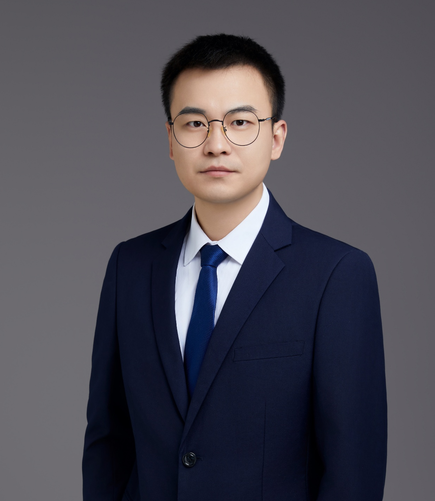

Our group brings together mechanics, acoustics, optics, and biomedical engineering to understand and work with living matter.

Principal investigator
Guo-Yang Li 李国洋
Assistant Professor & PhD Advisor Peking University
Guoyang studies wave mechanics in soft living matter and develops methods to measure and modulate tissue mechanics. He established the MiM Lab at Peking University in March 2023.
2019–2022
Harvard University / Massachusetts General HospitalPostdoctoral research